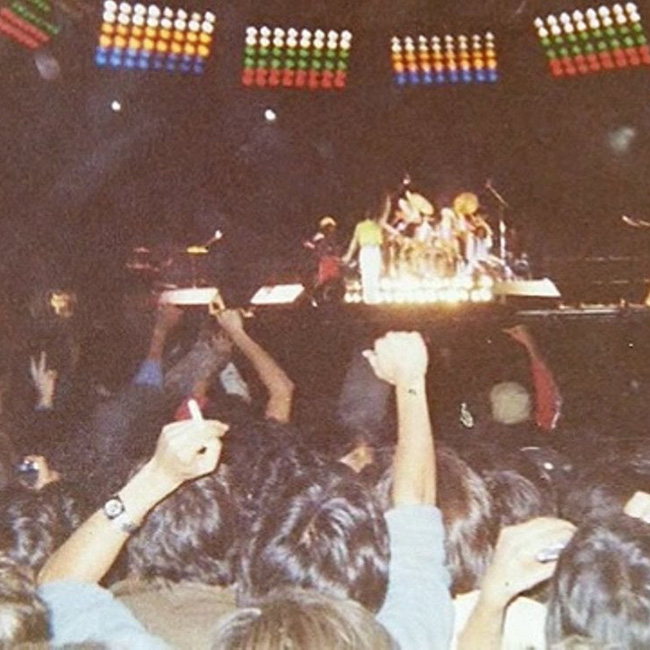

Integrantes

- Cantante: Freddie Mercury
- Guitarrista: Brian May
- Baterista: Roger Taylor
- Bajista: John Deacon
Queen en el concierto de Live Aid en 1985
La conocida imagen
La banda Queen actual en una unión con Adam Lambert
Origen de la banda
El inicio de su camino hacia la fama
En los últimos años de los sesenta, Brian Harold May y Roger Meddows Taylor formaron parte de la banda de hard rock Smile con Tim Staffell como cantante. Después de que Staffell abandonó el grupo, May y Taylor contactaron con Freddie Mercury para que reemplazase el puesto, él era el compañero de clase con Staffell y un conocido suyo. Mercury propuso la idea de cambiar el nombre de la banda, el nombre que ofrece fue Queen. En sus propias palabras, 'el nombre era real, universal y sonaba fuerte, espléndido.'
Ante la ausencia de un bajista, los tres buscaron varias veces hasta encontrar a John Deacon. De esta forma, la legendaria banda de cuatro integrantes estaría completa. Volvieron a tocar en el Imperial College y comenzaron una gira en Cornualles, uno de los condados de Inglaterra. Realizaron numerosos conciertos a partir de ahí.
Leer másEl dia en el que Queen vino a México
La visita poco agradable al país latinoamericano
Transcurría el año 1981 y Queen llevaba a cabo su gira The Game Tour, algunas de las paradas fueron en las ciudades de Guadalajara, Ciudad de México, Puebla y Monterrey, en el pais de México. Desde un principio, las cosas parecían no ir para bien, ya que con el objetivo de ingresar al país, se rumoreaba que Queen había sobornado a las autoridades, debido a que ellos necesitaban dieciocho visas para entrar con el equipo completo, cuando en el momento solo se entregaban seis visas diarias.
El dia de la presentación en Monterrey, a causa del mal trabajo por parte de los organizadores del evento, quienes citaron al público horas antes de la fijada, las personas se desesperaron por la larga espera y entraron empujando para ver a la banda. Esto tuvo como producto muchos heridos. Los dias 17 y 18 Queen estaría tocando en la ciudad de Puebla en el Estadio de Béisbol Ignacio Zaragoza. Muchos fans acamparon días antes del concierto y al mo- mento de ingresar a este, entraron de un portazo. Esto ocasionó un conflicto con la policía, varias personas sin boletos querían presenciar el recital, mientras otras con boleto no pudieron realizar su deseo por haberse quedado afuera.
El ambiente se tornó de mal a peor cuando en el concierto, Freddie Mercury tiró agua al público (era una costumbre suya, sin embargo no fue tomado a bien), cuando salió del escenario y volvió con un sombrero de paja, el público empezó a abuchear y lanzarle cosas, como zapatos, botellas y latas. Mercury se enojó a causa de la actitud colectiva y el maltrato, por lo que expresó con sarcasmo: "¡Muchas gracias Puebla!, ¡México thank you for the shoes, adiós amigos, mother fuckers, goodbye, you bunch of tacos!". Al final, Queen recitó otro concierto el día siguiente, pero terminó por cancelar las fechas que faltaban.
Leer más